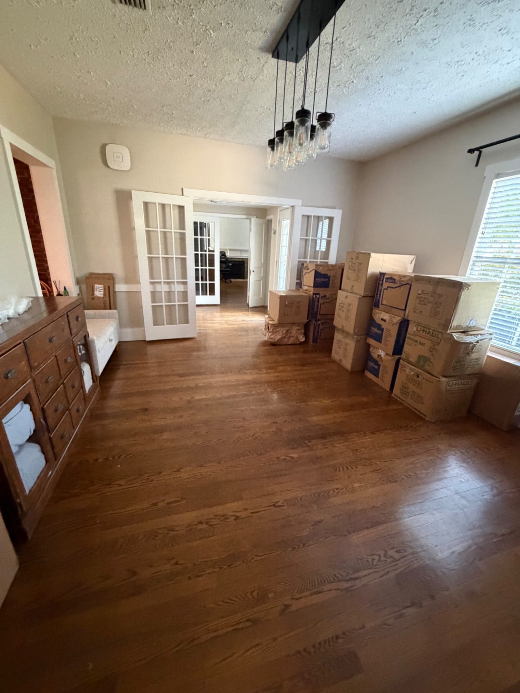
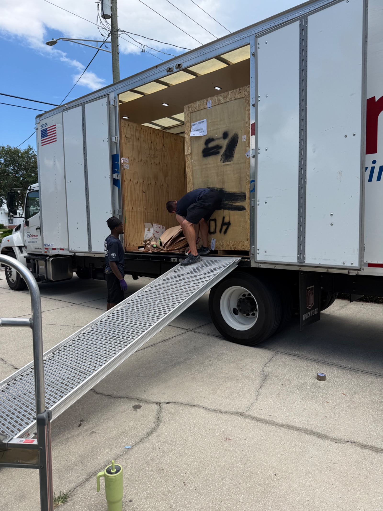

Ready for Japan: Pack-Out Complete and On to the Next Adventure!


There is a distinct, undeniable echo in a house once the life you’ve built inside it is carefully packed away into wooden crates and shipping boxes.
Looking around the living room today, standard furniture and cozy decor have officially given way to neatly stacked boxes, sealed crates, and bare hardwood floors. It’s that surreal, quiet moment every military family knows all too well: the house is technically still yours, but it already feels like it’s holding its breath for the next chapter.
The Art of the Overseas Pack-Out
An overseas PCS brings its own unique kind of puzzle. Between organizing Household Goods (HHG), staging Unaccompanied Baggage (UBA), and sorting out long-term storage, watching the crew build out and seal up those giant wooden crates makes it all feel incredibly real.
This isn't just a move to a new neighborhood—it's a full-on leap across the ocean.
Ready for the Next Chapter
There’s always a bittersweet mix of emotions when you clear out a home. You think about all the everyday memories made within those walls, the routine, and the comfort of the familiar. But right alongside that nostalgia is pure excitement for what’s waiting on the other side.
The crates are sealed, the inventory lists are finalized, and the house is cleared out. We are officially ready to turn the page, board that flight, and begin our new chapter in Japan!
Stay tuned—next stop, across the Pacific!